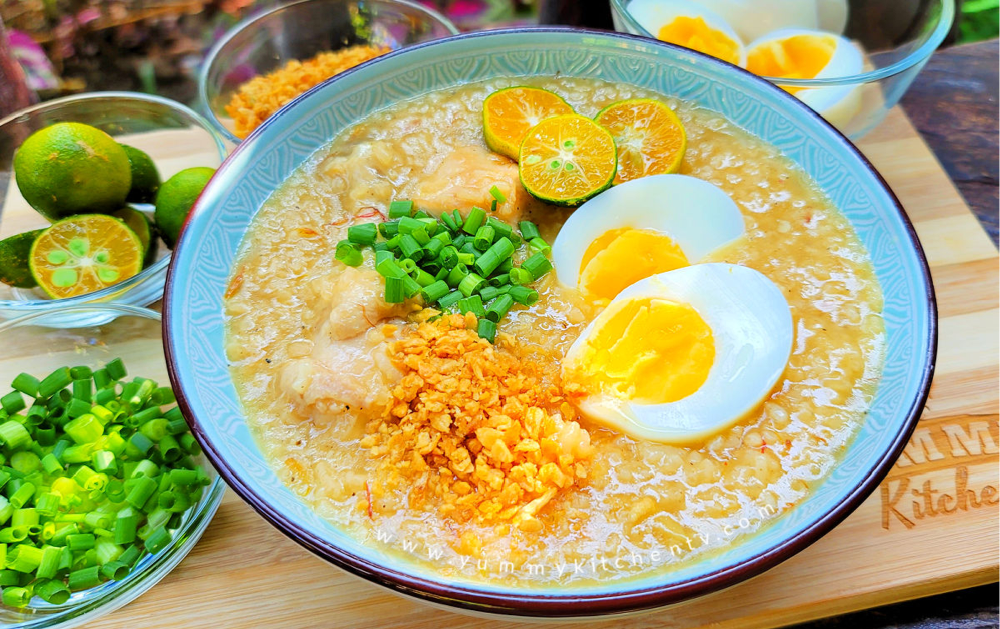

Lugaw Sources |
|---|
Ingredients: |
|---|
|
1/2 cup glutinous rice |
|
1/2 cup regular rice |
|
500 grams chicken (sliced into serving pieces) |
|
Thumb size ginger (sliced into thin strips) |
|
5 cloves of garlic (chopped) |
|
1 medium onion (chopped) |
|
1 teaspoon ground black pepper |
|
1 tablespoon kasubha |
|
fish sauce to taste |
|
7 to 8 cups water |
|
oil for sauteing |
|
1 piece chicken broth cube |
Instructions: |
|---|
|
1.Heat some oil in a deep pot. Add the chicken cuts and sear until light brown. Then, remove them from the pan and transfer to a container. 2.Add the ginger, garlic and onions. Saute for a few minutes until aromatic and light brown. 3.Add the glutinous rice and the regular rice. Saute for a few minutes. Season with some fish sauce to taste. Wait for the strong aroma to evaporate before stirring. 4.Put the chicken back to the pot and sprinkle some black pepper. Add a piece of chicken broth cube. Pour some water to create a broth. Cover the pot and let this simmer (for 20 minutes). Stir from time to time. 5.Add the kasubha for some natural colors. Continue simmering until the broth is thick. Once thick, the dish is ready. |